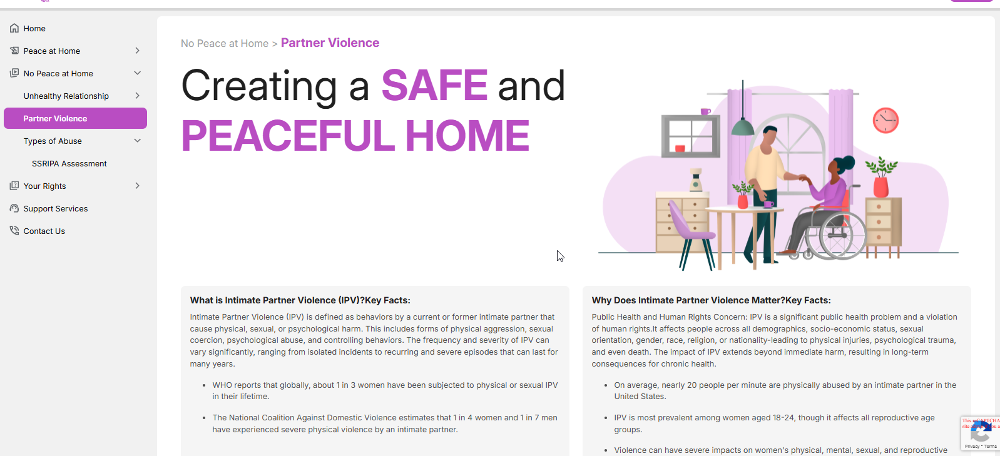
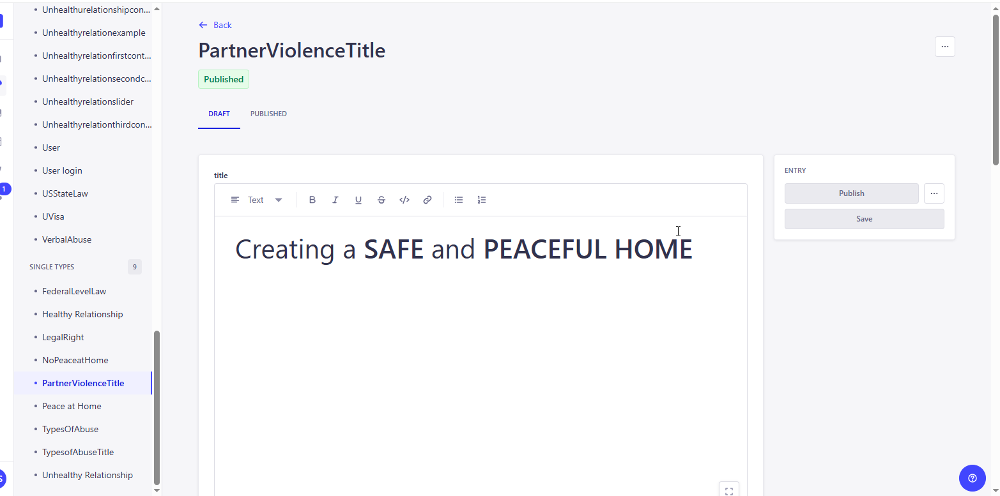
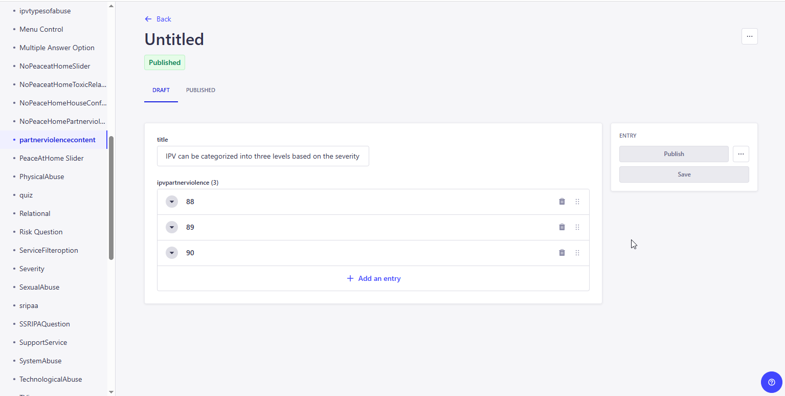

<link rel="stylesheet" href="../css/styles.css">
 
<main>
        <h2>Partner Violence</h2>
        <p>
           Intimate partner violence (IPV) is defined as any behavior within an intimate relationship (married, unmarried, and live-in) that causes physical, psychological, or sexual harm to those in that relationship. 
           This definition encompasses physical, sexual, and psychological aggression/abuse or controlling behavior of any kind.IPV differs conceptually from domestic violence. 
           Domestic violence is defined as the physical, sexual, and emotional maltreatment of one family member by another.It typically includes all types of family violence such as elder abuse, child abuse, and marital rape; however, 
           IPV is limited to acts of aggression between intimate partners.As females are more likely to be hurt in cases of IPV <br>
           <br>
        1. The user inputs a valid URL to launch the Education Module and the URL is : 
            <a target="_blank" href=https://happy-grass-02e46c50f.6.azurestaticapps.net/partnerviolence>Partner Violence</a> <br>
        2. The Partner Violence page displays the content and levels of the IPV information.<br> 
            <br><br>
           The administrator must access the CMS site in order to add, edit, and update the material on the page..<br><br>
           Go to CMS > Content Manager > Select and open the 'PartnerViolenceTitle' under the Single type from the side menu.<br>
            <br>
           Update the content if required and Click on Publish to make the changes refelects in the application. <br>
        <h4><b><u>IPV Abuse Levels </u> </b></h4>  
        4. The TYPOLOGIES OF INTIMATE PARTNER VIOLENCE : As per severity of the violence, IPV can be classified as Levels and all the level details are 
           described in the content , and the contents are stored in the CMS with its images and admin can able add/edit and updated the content. <br> 
            <br><br>
           <u>New Entry / Update the Existing Content.</u><br>
           Go to CMS > Control Manager > Select and open 'partnerviolencecontent' > Click on Create new Entry for adding the new 
           or open the exisiting content, update and save it. <br>           
            <br>
           Update the content if required and Click on Publish to make the changes refelects in the application. <br>
        </p>                 
</main>